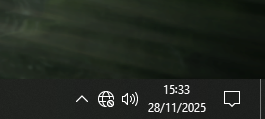
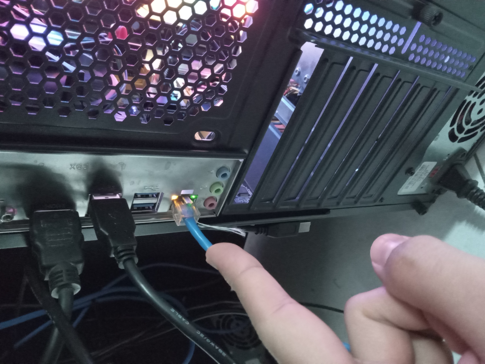
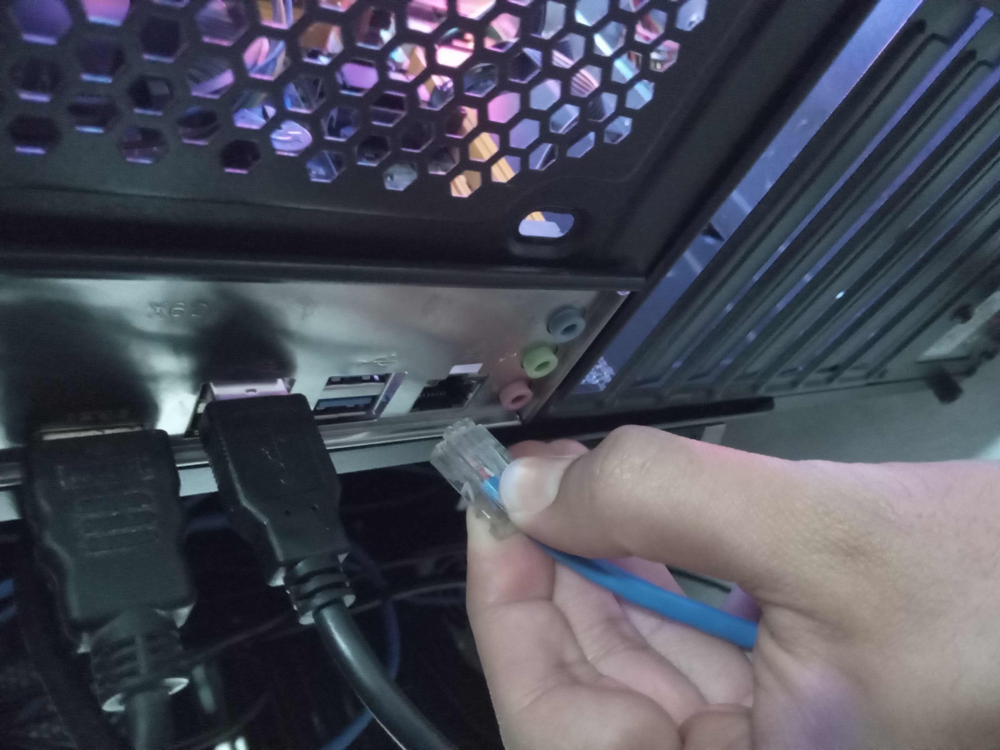
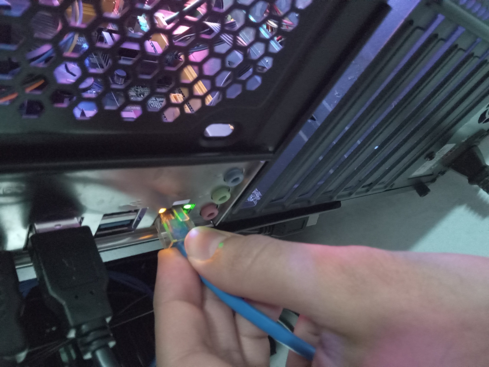

Emergência: Eitaa, PC ta sem acesso a internet?!

Vamos verificar o cabo azul que está atrás do PC. Observe as luzes ao lado do cabo, a luz vermelha indica que o cabo esta conectado, e a verde, que ele esta com acesso a rede.

Caso as luzes estejam apagas, tente remover o cabo, basta presionar uma pequena alavanca de plástico

conecte o cabo ate ouvir um "clique", observe se as luzes voltaram.

Pronto, se as luzes voltaram, verifique no computador se estar conectado, veja se esta assim: